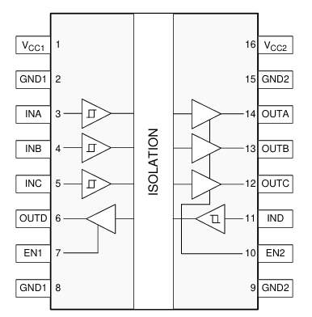

FT4222H使用说明
概述
FT4222H是一款采用紧凑型32引脚QFN封装的高速/全速USB2.0至四路SPI / I2C器件控制器。
该器件需要一个12MHz的外部晶体。
支持多电压IO：1.8 / 2.5和3.3V。
特点
- 整个USB协议在芯片上处理,不需要USB特定的固件编程。
- 可配置的工业标准SPI主/从接口控制器
- SPI主器件支持单，双，四数据宽度传输模式下的可配置数据宽度
- 在SPI主控制器应用中最多支持4个通道从控选择控制引脚
- 在SPI主机模式最高支持30MHz时钟
- 在SPI从模式支持最高20MHz时钟。
- 采用四模式传输的SPI主器件的数据传输速率高达28Mbps
- 符合I2C v2.1和v3.0规范的可配置I2C主/从接口控制器
- 支持100kbit/s标准模式（SM），400 kbit/s快速模式（FM），1 Mbit/s快速模式加（FM +）和3.4 Mbi/s高速模式（HS）
- 可配置的GPIO可以通过USB总线由软件应用程序轻松控制
- USB电池充电器检测。 允许USB外围设备检测到更高电流电源的存在，以实现更快速的充电
- 提供的器件预编程有唯一的USB序列号
- USB电源配置; 通过电源开关支持总线供电，自供电和总线供电
-
- 5V USB VBUS检测引擎
- 真正的3.3V CMOS驱动器输出和TTL输入。（通过外部上拉电阻工作到1V8）
- 可配置的I/O引脚输出驱动强度; 4毫安（最小）和16毫安（最大）
- UHCI/OHCI/EHCI主机控制器兼容
- 工作温度范围; -40°C 至 85°C
- 采用紧凑型无铅32引脚VQFN封装（符合RoHS）。
典型应用
- USB到单模SPI主控制器
- USB到双模式SPI主控制器
- USB到四通道模式的SPI主控制器
- USB到单个SPI从属控制器
- USB到I2C主控接口控制器
- USB到I2C从属控制器
- 软件/硬件加密和无线模块的USB加密狗实现
- 检测USB专用充电端口，以便在便携式设备中进行高电流电池充电。
官方开发模块UMFT4222EV
模块文档
电商平台上第三方仿制版60元左右。 （2024.12.1）
芯片相关资料
- FT4222H 数据表
- FT4222H 勘误表技术说明
- FT4222H Rev.D 技术说明
- AN_357 Android D2XX Demo Application for FT4222H
- AN_329 User Guide for LibFT4222
- 引脚说明AN_184
- LibFT4222 Windows Library (v1.4.4) and Examples
- LibFT4222 Linux Library (v1.4.4.44) and Examples
- LibFT4222 MAC OSX Library (v1.4.4.48) and Examples
- D2xx驱动程序
开发示例
以在windows平台下开发，使用此模块作为SPI从机为例。
相关资料：
- D2xx驱动程序
- AN_329 User Guide for LibFT4222
- 引脚说明AN_184
- LibFT4222 Windows Library (v1.4.4) and Examples
- D2XX Programmer’s Guide
配置工程
先安装驱动。
安装完驱动后，解压LibFT4222 Windows Library (v1.4.4) and Examples，
取 ：
\imports\ftd2xx\ftd2xx.h、\imports\ftd2xx\dll\amd64\ftd2xx.lib\imports\LIBFT4222\inc\ftd2xx.h、\imports\LIBFT4222\dll\amd64\LibFT4222-64.lib\imports\LIBFT4222\dll\amd64\LibFT4222-64.dll
以上就是开发此模块所需的动态库。
基本工作流
1 |
|
硬件设计
硬件参考官方开发模块UMFT4222EV即可。
原理图：

当使用USB的VBUS进行供电时，将
VBUS与VCCIN短接、VCCIO与VOUT3V3短接；
仅使用SPI模式时，将DCNF1与DCNF0通过10KΩ的上拉电阻置高即可。
如果使用VOUT3V3作为其它设备的电源，最大电流不能超过25mA。
官方开发模块使用MICRO USB接口比较老旧，
这里提供Type-C 16P（仅支持USB2.0）的原理图：

SPI端口进行电气隔离
可以选择数字隔离器ISO7741
作为隔离器,
该隔离器特别适合于SPI接口的隔离，
具体型号ISO7741DWR的隔离等级为5000 Vrms / 8000 Vpeak。

该隔离器在5V供电时支持的最大SPI时钟频率为15.6MHz，
根据计算在3.3V供电时最大SPI时钟频率最好不要超过13MHz。
当ISO7741的工作在3.3V时，
信号输出侧（对应连接SPI从机）的电源电流最大值为18.6 mA，
因此可以直接用FT4222H的VOUT3V3作为其电源。

本博客所有文章除特别声明外，均采用 CC BY-NC-SA 4.0 许可协议。转载请注明来源 YILON！
相关推荐

2024-03-09
CPLD_概述
...
2023-10-21
DSP基本概念
流水线操作与系统架构 CPU的执行指令可分为四步：...
2024-02-24
Flash芯片AT45D161D
...
2023-10-21
Simulink模型创建C语言_函数原型与传参控制
函数原型 由Simulink模型默认创建的C代码函数原型为： 1234/* 算法相关函数原型，“model”表示模型名 */void model_initialize(void);void model_step(void);void model_terminate(void); 可以发现没有参数输入与返回值，算法实现是通过调用全局变量实现的。 在实际工程中，可能会带来冲突与不必要的静态存储区空间浪费。 Code Mappings 打开Embedded Coder工具，在界面左下方点击“Code Mappings - C”按钮。 修改函数名 在Code Mappings窗口点击Functions标签页， 在“Function Name”中可修改算法函数名： 修改函数传参 同上一节界面，点击_step函数的“Function Preview”， 勾选"Configure arguments for Step function prototype" 点击"Get default"，得到函数传参的配置信息： “C Identifier...
2023-10-21
Simulink模型创建C语言_数据类型
参考链接 Simulink数据类型 flowchart LR Root[Simulink数据] --- L1_1[基本类型] & L1_2[存储类型] & L1_3[数据组织] L1_1 --- L2_1_1[浮点型] & L2_1_2[整型] & L2_1_3[定点型] L1_2 --- L2_2_1[外部] & L2_2_2[内部] L1_3 --- L2_3_1[标量] & L2_3_2[矢量] & L2_3_3[Bus总线] L2_1_1 --- L3_1_1_1[double（64bits）、single（32bits）] L2_1_2 --- L3_1_2_1[无符号整型数 \n uint64_T，uint32_T，uint16_T，uint8_T，boolean_T，char_T] & L3_1_2_2[有符号整型数 \n int64_T，int32_T，int16_T，int8_T] L2_1_3 --- L3_1_3_1[用户自定义] L2_2_2 ---L3_2_2_1[局部] &...
2023-10-21
Simulink模型生成C语言_子系统
参考链接 虚拟子系统(Virtual Subsystem) 在simulink建模时，为使视图简洁层次分明，可将特定功能的部分封装为一个虚拟的子系统。 虚拟子系统不影响原模型的任何功能，不影响原模型的执行顺序，仅仅只是视觉上的子系统。 因此虚拟子系统的的输入输出端口并不会真的在代码中定义， 即将部分模型封装为虚拟子系统前后生成的C代码不会有变化。 原子子系统 点击虚拟子系统，在上方工具栏可将其转化为原子子系统： 原子子系统可以通过配置相关属性， 为子系统内部的模型生成单独的函数接口， 可以生成inline函数或可重用函数， 自定义函数接口形式、函数名称，甚至可以生成单独的源文件。 右键选择查看原子子系统的模块参数，重点关注“代码生成”一栏： 默认为自动(Auto) 实际上为内联(inline)，此时该原子子系统的代码生成方式和虚拟子系统是相同的，即子系统内的模型会嵌在上层模型中，是上层模型代码的一部分； 不可重用函数(Nonreusable...